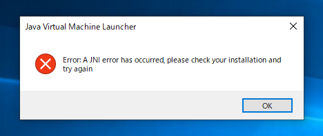

詳細


プログラムを実行するとウィンドウが出現し、ボタンを押せばアイコン先のサイトに飛ぶというプログラムになっています。
URLでサイトを開く以外にもアプリケーション保存先リンクを記述してあげればボタンでアプリケーションの起動も可能となっています。
最前面に出したい
ショートカット用のウィンドウなので常に最前面に出したい。そう思って調べた結果、「PowerToys」というアプリをDLするとできるらしい。
「PowerToys」→【URL】
即起動したい
毎回eclipseを起動して実行をするのは面倒なので他のアプリケーションと同じダブルクリックで起動できようにしたく試行錯誤。
jarファイルで実行したかったが

と出てしまいわからないので.batで起動できるように変更。このエラー解決は今後の課題です。